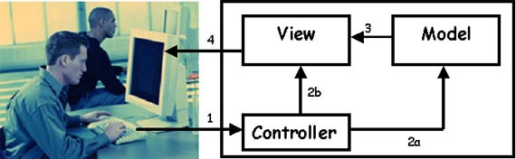
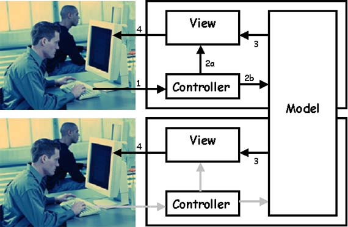

Model-View-Controller
 New version!A new version of this website is available at architectural-patterns.net.
This architecture is used in simple GUI applications.
The architecture is event-driven, which means that all activity starts by some event and is propagated by
some other events.
The model is the information contents of the component. It can be as simple as an integer or a string,
and as complex as an interface to an external database. The MVC component does not need to contain the
model itself. It may contain just a link to the model. And this is common if multiple MVC components
are connected to a model.
The view is the visual representation of the component, usually on a computer screen. It can be a textbox or a button in a form on the screen,
anything that represents the model or part of it. Try to think of the view as only the visual aspect
of the component. I.e. just the picture of the textbox that can in itself not be manipulated by a keypress
or mouseclick. The controller takes care of all the action. It is sent external events like keypresses, mouseclicks, mousemoves, timer updates, etc. It knows how to change the model in response to these events and it it also knows how to change the component's state in the view. If one for example presses a key when a textbox is active, the controller tells the model to add the character to the string and it tells the view to advance the cursor position. Examples
Where does it come from?The MVC architecture was developed as part of the Smalltalk group at the famous Xerox PARC. It is usually credited to the Norwegian Trygve Reenskaug, who worked there as a visiting scientist in 1978/1979. MVC is since then an integral part of the Smalltalk programming language.When should you use it?Most often you don't need to build such an architecture from scratch. The architectures usually come with visual programming environments (like Visual C++, JBuilder, etc. etc.) which create the code for all MVC components for you, together with the event handling mechanisms required. If this is so, it is still useful to know the basics of the architecture you're working with.How does it work?An MVC component is created in these steps
The control flow within an MVC component.  The controller receives an event, say a keypress from the user (1). Depending on its own logic, it processes the event, and updates the model (2a) or only the characteristics of the view (2b). The model notifies the view(s) (3). The view updates itself as can be seen by the user (4). If the model is changed, not only the view of the component is notified, but also the views of other components which registered themselves to the model. In the next picture the same component as before is shown on top and a registered component is shown below.  The view of the registered component receives a notification from the model (3). The view updates itself as can be seen by the user (4). Common implementation techniques
Links |